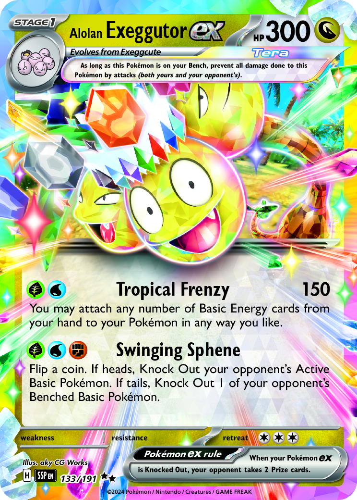

Hover
Tilts toward the cursor on hover.
Ambient
Animates continuously when in view.
Clickable
Click or press Enter to expand, Esc to close. Flips and zooms to modal.
Image card

Click or press Enter to expand, Esc to close. Ambient animation with a real image.
Custom button
Button supplied in markup, and data-start-flipped so the
card rests back-to-camera and flips to reveal its face on open.
Custom dialog
Opens into a custom <dialog> supplied in the markup
(data-dialog), so the enlarged card shares its modal with
a content panel.